Respaldo académico real
Licenciado en Educación Física y Deportes (Universidad del Valle) + 5 certificaciones en biomecánica, alta intensidad, nutrición, suplementación y entrenamiento para mujeres.

Entrenador personal · Cali / Yumbo
Formación universitaria, cursos especializados y una disciplina que entreno primero en mí, antes de llevarla a ti. Entrenamiento, nutrición y seguimiento en un solo lugar.

Licenciado en Educación Física y Deportes (Universidad del Valle) + 5 certificaciones en biomecánica, alta intensidad, nutrición, suplementación y entrenamiento para mujeres.
Compite y se presenta en tarima. No enseña una teoría que no vive: es evidencia física de que su método funciona.
Entrenamiento, nutrición, suplementación y seguimiento en un solo plan, presencial u online.

Sobre mí
Entrenador personal con más de 10 años de experiencia, Licenciado en Educación Física y Deportes (Universidad del Valle) y modelo fitness competitivo. Más de 400 clientes transformados combinando entrenamiento inteligente, nutrición y disciplina real.
Jhon Rafael Lozano Rosero entrena y compite desde 2015. Licenciado en Educación Física y Deportes por la Universidad del Valle, combina esa formación con cursos especializados en biomecánica, alta intensidad, nutrición y suplementación del Congreso Internacional COFIT, y con la prueba más contundente de todas: su propio físico, forjado también en tarima como modelo fitness competitivo y embajador de marcas como Herpo, Koaj, Diane and Geordie, Daniel Tovilla y Saligia.
Ha guiado a más de 400 personas hacia su mejor versión, entrenando hoy en Mundo Fitness (sede Yumbo) y por videollamada para quien prefiera entrenar desde donde esté. Más de 40 mil personas siguen su proceso en Instagram y 11 mil en TikTok.
Cómo funciona
Cuéntame qué quieres lograr y cómo prefieres entrenar: presencial en Yumbo, semipersonalizado u online.
Definimos tu punto de partida y la meta: bajar grasa, ganar masa muscular o recomposición corporal.
Armo tu plan de entrenamiento, nutrición y suplementación a la medida, sin plantillas genéricas.
Entrenas con seguimiento real, ajustes cuando los necesites y soporte directo por WhatsApp.


Servicios y planes
Sin pasarela de pago: cada plan te lleva directo a WhatsApp para resolver dudas y afinar los detalles conmigo.
Presencial en Yumbo · 1 persona
Presencial en Yumbo · 2 a 4 personas
Virtual · por videollamada
Virtual · por trimestre
Virtual · solo nutrición
Resultados
Nueve transformaciones reales, contadas en su propia foto. Desliza o usa las flechas para ver cada historia.
Preguntas frecuentes
Respuestas directas, sin vueltas. Si no encuentras la tuya, pregúntame directo por WhatsApp.
Incluye plan de alimentación personalizado, plan de entrenamiento, guía de suplementación, entrenamiento presencial en Yumbo y toma de medidas antropométricas. Es un método completo: entrenamiento, nutrición y seguimiento en un solo plan.
El plan personalizado (1 persona) va desde $500.000 por 8 sesiones hasta $600.000 por 16 sesiones. También hay un plan semipersonalizado (2-4 personas) desde $320.000. Escribe por WhatsApp para una cotización exacta según tu objetivo.
Sí. El entrenamiento online por videollamada tiene el mismo contenido y los mismos precios que el plan personalizado presencial, ideal para quien no vive en Cali/Yumbo o prefiere entrenar desde casa.
El personalizado es entrenamiento 1 a 1; el semipersonalizado es en grupo reducido de 2 a 4 personas, con el mismo contenido (nutrición, entrenamiento, suplementación, medidas) a un precio menor por persona.
Depende de tu punto de partida, objetivo y constancia — no hay un plazo único válido para todos. Lo que sí es constante es el método: entrenamiento, nutrición y seguimiento juntos, no por separado, lo que acelera resultados reales frente a entrenar sin un plan integral.
Ayuda con ambos objetivos. Cada plan se personaliza según la meta de la persona: pérdida de grasa y definición, ganancia de masa muscular, o una combinación de las dos.
Sí — en la sección Resultados del sitio hay transformaciones reales de clientes, antes y después. Jhon también compite como modelo fitness y muestra su propio físico en tarima, como evidencia de que aplica en sí mismo el método que enseña.
Sí. Todos los planes de entrenamiento (personalizado, semipersonalizado y online) incluyen plan de alimentación y guía de suplementación, no solo la parte de ejercicio.
Es un servicio trimestral 100% virtual ($550.000 por trimestre) que incluye plan nutricional, plan de entrenamiento, guía de suplementación y soporte de dudas por WhatsApp — sin sesiones de entrenamiento presencial ni por videollamada.
Sí, existe un plan de alimentación independiente, solo nutricional, desde $100.000 al mes.
Sí. Es Licenciado en Educación Física y Deportes por la Universidad del Valle y cuenta con Tarjeta Profesional de Entrenador Deportivo (COCED) vigente, además de formación especializada adicional.
Licenciatura en Educación Física y Deportes (Universidad del Valle), Diplomado en Entrenamiento Personal y Nutrición Deportiva (Uniplus Academy, 120h), asistencia profesional al IV Congreso Internacional COFIT 2025, y certificados en biomecánica aplicada, alta intensidad, entrenamiento para mujeres, planificación nutricional y suplementación deportiva.
Sí, compite y se presenta en tarima como modelo fitness competitivo, y es embajador de marcas como Herpo, Koaj, Diane and Geordie, Daniel Tovilla y Saligia — su formación teórica va acompañada de resultados propios y demostrables.
En Mundo Fitness, sede Yumbo (Cl. 10 #20-635, frente a Gaviota de la Colina, Arroyo Hondo, Yumbo, Valle del Cauca). La ubicación exacta y el mapa están en la sección de Contacto del sitio.
Por WhatsApp directo desde el botón del sitio, o por Instagram (@sterlingjhon) y TikTok (@sterlingjhon1).
Ambas modalidades: entrenamiento presencial en Yumbo, y entrenamiento online por videollamada o asesoría virtual para cualquier parte de Colombia.
Contacto
Nadie llega a su mejor versión solo. El primer paso es escribir.
Escríbeme por WhatsApp y arrancamos. También me encuentras en Instagram y TikTok.
Así de fácil empieza tu cambio.
¡Escríbeme ahora!Mundo Fitness, sede Yumbo
Cl. 10 #20-635, frente a Gaviota de la Colina, Arroyo Hondo, Yumbo, Valle del Cauca.